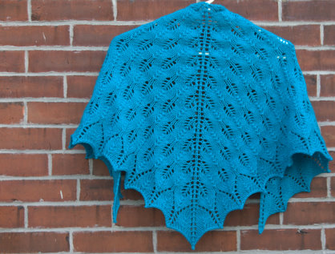
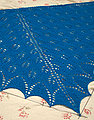
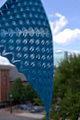
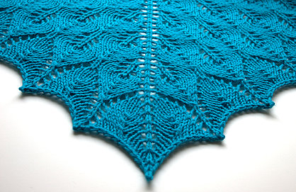

|
|
||
July 07, 2007 - Posted by Grace SchneblyShetland TriangleHere it is in all its glory.. My first lace shawl! It’s amazing what you can create little bit of yarn, a good pattern, and three days of work.  Project Specs This was definitely the perfect pattern to use for my first lace knit. I can’t stress how simple it was! I admit that I was intimidated at the start after reading the instructions for the cast on. I have never crocheted before, and the mere mention of using a crochet hook makes me nervous. You just have to do a few chain stitches which get unraveled anyways, so it wasn’t a big deal at all. This was my first time reading from a chart without any help from written instructions. The chart was really clear, and the pattern is symmetric so I didn’t have any problem at all. After just a few repeats, I had the pattern memorized and was able to cruse through it. I followed the instructions to T, knitting 8 repeats in the main body section of the shawl. I used exactly three balls of Merino Style, and literally had 2 feet of yarn left after casting off. I wish I would have completed several more repeats because the shawl turned out a bit too small for my tastes, and I had an extra ball of yarn to spare. It was nice to have that extra ball around as a security blanket though because it was just so close at the end. Before blocking it measured 39” x 17”; after blocking it grew to about 50” x 23”, which is smaller than the dimensions given in the book. I think I could have gotten two more repeats out of that extra ball of yarn, and I’m now kicking myself for not using it. It isn’t a total loss though, I know someone who it would be perfect for, and I think that I will gift it to her for Christmas. Hey I did say I wanted to start my Christmas knitting earlier this year! I am glad that I used Merino Style because it made a more substantial shawl which will be perfect for cool weather. It was nice and soft, there were no knots, it didn’t bleed when washed, it blocked well, the drape after blocking is beautiful, and it is extremely affordable! This has got to be one of the most affordable knits I have ever made, costing $7.50 total. How can you go wrong with that? Granted in the future I would definitely knit extra repeats to make a larger shawl. But even if you did four extra repeats, you would probably need only 2 more balls. However if I make another Shetland Triangle for myself in the future, I think I would experiment with another kind of yarn just for fun. Now I am kind of at a loss for what to start next because all I can think about are lace shawls and Backyard Critters. I have three balls of Rowan Kidsilk Spray I was thinking of using for a Birch or Kiri shawl, but I don’t know if I am up for that yet. I heard Kidsilk is kind of temperamental and difficult to use. I have a skein of Knit Picks Alpaca Cloud for a Trellis Scarf, but I am a bit confused about the k7tog instructions. Has anyone tried any of these patterns out? What is a good next step in lace knitting? Any suggestions would be much appreciated!  |
   Recent ReviewsRecent Posts
 Our Favorites
|
|
| © 2007 KathrynIvy.com | ||


{kind=link}
{kind=link}
{kind=link}